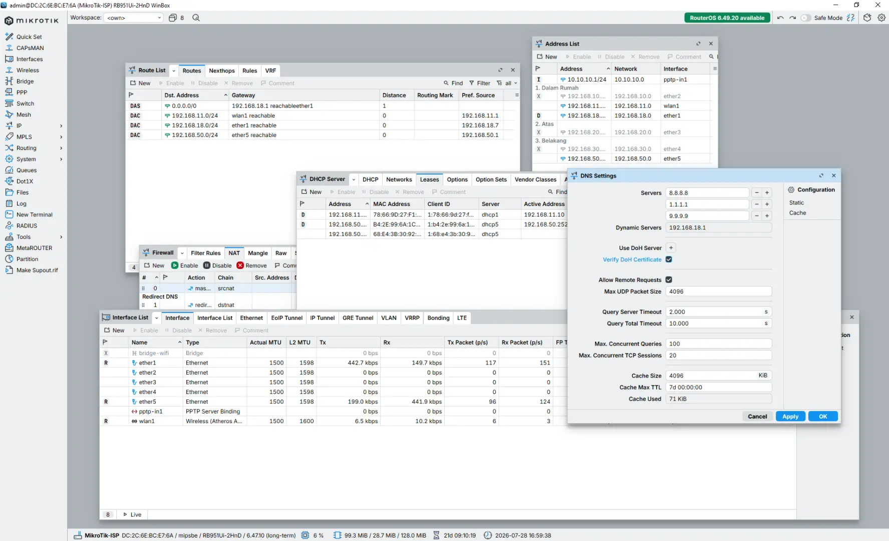
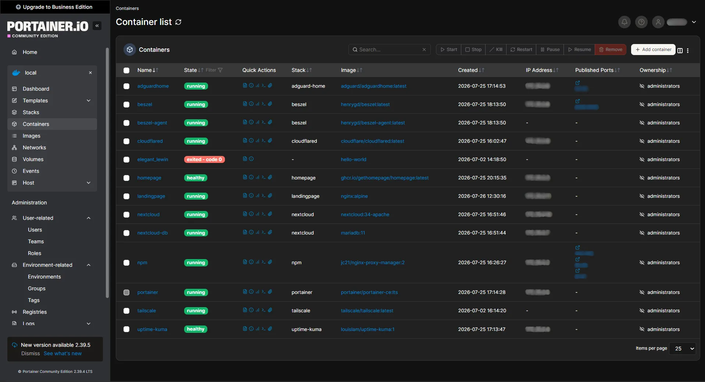
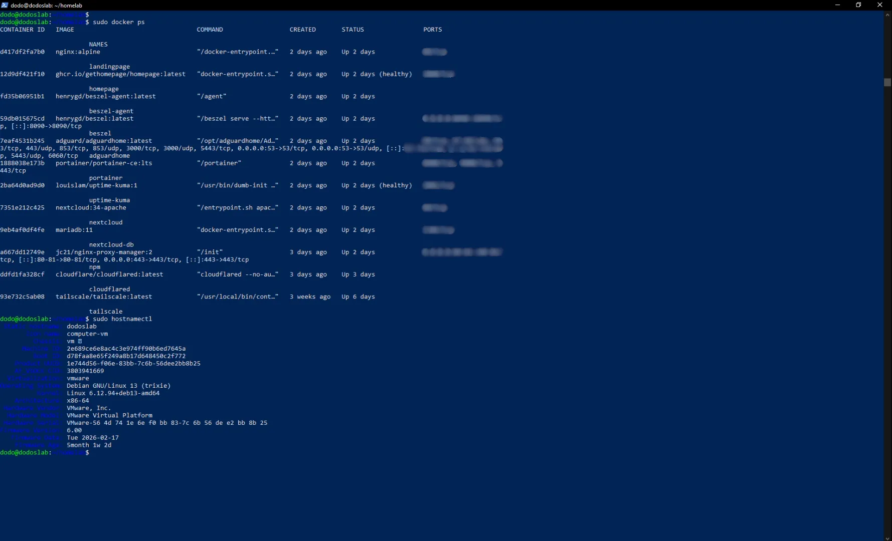

Docker Engine
Container platform used to deploy and manage self-hosted applications.
A personal environment where I build, test, and maintain Linux servers, Docker containers, networking, monitoring, automation, and self-hosted services through real-world experimentation.
$ hostname
dodos-homelab
$ docker ps
🟢 nginx-proxy-manager
🟢 uptime-kuma
🟢 homepage
🟢 nextcloud
🟢 tailscale
This homelab is my personal environment for learning infrastructure, system administration, and self-hosted technology. Built using my own hardware, this lab is used to experiment with Linux, Docker, networking, deployment, and managing services in a real environment.
Public services are continuously monitored using Uptime Kuma to ensure availability and quick issue detection.
Overview of my homelab infrastructure, from public access to self-hosted services.
Intel Core i3-8100
16GB DDR4
Debian Linux
Self-hosted applications running inside Docker containers to provide monitoring, management, storage, and remote access.
Container platform used to deploy and manage self-hosted applications.
Reverse proxy solution for routing services and managing SSL certificates.
Monitoring system used to track service availability and uptime status.
Personal dashboard to organize and access homelab services.
Self-hosted cloud platform for file management and personal storage.
Secure remote network access using WireGuard-based VPN technology.
The physical foundation behind my homelab environment, built for learning, testing, and running self-hosted services.
Technologies and tools used to build, maintain, and improve my homelab environment.
A visual collection of my experiments, configurations, and infrastructure activities.



